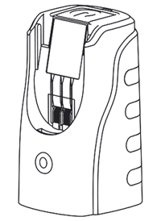
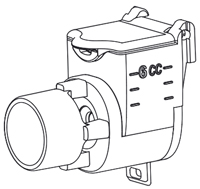
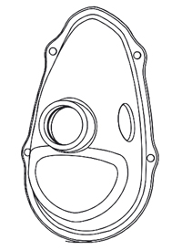
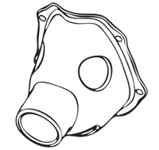
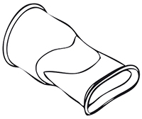
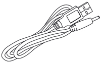
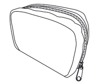
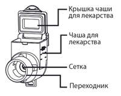
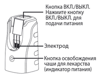
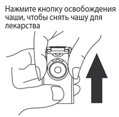

|
 |
| НЕБЗМАРТ (NEBZMART) набор диагностический | |||
|
Номер и дата регистрации: РЗН 2018/7215 от 28.05.18 Групповая принадлежность: Медицинское изделие для ингаляций |
Владелец регистрационного удостоверения: зарегистрировано Представительство: | ||
Форма выпуска, состав и упаковка Небулайзер Гленмарк портативный модель MBPN002 для ингаляции лекарственного средства. В комплект поставки входят: основной блок; чаша для лекарства; инструкция по эксплуатации, гарантийный талон (на последней стр. инструкции); маска для взрослых; маска для детей; мундштук; USB кабель; сумка для хранения. | |||
| |||
Описание препарата основано на официально утвержденной инструкции по применению и утверждено компанией-производителем для издания 2022 г. | |||
Свойства |
Область применения |
Рекомендации по применению |
Побочное действие |
Противопоказания |
Беременность и лактация |
Особые указания |
Передозировка |
Лекарственное взаимодействие |
Условия хранения и сроки годности |
Условия реализации
Свойства
Небулайзер Гленмарк NEBZMART портативный MBPN002 предназначен для ингаляции лекарственного средства при различных респираторных заболеваниях. Технология Меш-распыления (Vibrating Mesh Technology), используемая в небулайзере Гленмарк NEBZMART портативный MBPN002, основана на "просеивании" частиц лекарственного средства через специальную сетку-мембрану. Колебания повышенных частот подаются на сетку-мембрану, а не на раствор, при этом лекарственный препарат распыляется равномерно, не разрушаясь. Размер распыляемых частиц (4-5 мкм) позволяет препарату воздействовать непосредственно на слизистую оболочку верхних и нижних дыхательных путей. Меш-технология (Vibrating Mesh Technology) позволяет использовать полный перечень препаратов для небулайзерной терапии, обеспечивает бесшумную работу, высокую дисперсность и скорость распыления. Электронно-сетчатые (меш) небулайзеры – самые современные виды небулайзеров. Они объединяют в себе достоинства ультразвуковых и компрессорных небулайзеров:
Прибор предназначен для использования в таких медицинских учреждениях, как больницы, поликлиники и кабинеты врачей, а также в обычных жилых помещениях и на открытом воздухе (температура окружающего воздуха - от 10°C до 40°C; относительная влажность - от 30% до 85%). Потенциальными пользователями прибора являются квалифицированные медицинские специалисты (врачи, медицинские сестры и физиотерапевты), а также пациенты после консультации с квалифицированным медицинским специалистом. Пользователь должен понимать основные принципы действия данного прибора и содержание инструкции по эксплуатации. Небулайзер Гленмарк NEBZMART портативный MBPN002 может работать как от двух батарей типа АА, так и от USB кабеля посредством подключения к адаптеру питания USB (приобретается дополнительно, не входит в комплект). Область применения
Целью терапии является достижение максимального местного терапевтического эффекта в дыхательных путях при незначительных проявлениях или отсутствии побочных явлений. Рекомендации по применению
Комплект поставки Проверка перед использованием В комплект небулайзера входят следующие предметы. Следует проверить все детали на наличие видимых повреждений. При отсутствии деталей, неисправности или повреждении необходимо обратиться к представителю производителя в РФ. Поврежденные детали необходимо заменить перед использованием прибора. 1. Основной блок.  2. Чаша для лекарственного средства.  3. Инструкция по эксплуатации, гарантийный талон. 4. Маска для взрослых.  5. Маска для детей.  6. Мундштук.  7. USB-кабель.  8. Сумка для хранения.  Наименование и назначение деталей небулайзера    Световые индикаторы:
2. Дезинфекция 70% медицинским этиловым спиртом (чаша для лекарственного средства, маска для взрослых, маска для детей, мундштук):
Следующие детали могут быть дезинфицированы кипяченой водой, 70% медицинским этиловым спиртом или раствором дезинфицирующего средства:
Следующие детали могут быть дезинфицированы 70% медицинским этиловым спиртом или раствором дезинфицирующего средства:
Следующие детали не могут быть дезинфицированы кипяченой водой, 70% медицинским этиловым спиртом или раствором дезинфицирующего средства:
* Приобретается дополнительно, не входит в комплект. Противопоказания
Прибор не следует использовать у пациентов, которые находятся без сознания или не дышат самостоятельно. Особые указания
Предупреждения Небулайзер Гленмарк NEBZMART портативный MBPN002 является медицинским изделием. Для проведения ингаляций следует использовать жидкие лекарственные средства, которые назначены или рекомендованы врачом и допущены к применению с данным небулайзером. Перед первым использованием прибора необходимо провести его дезинфекцию. В дальнейшем следует дезинфицировать детали после последнего сеанса лечения в день применения (после последнего использования небулайзера). После проведения каждой ингаляции следует очищать небулайзер. Небулайзер следует использовать только по назначению – для ингаляционной терапии. Любые другие варианты использования прибора являются недопустимыми и потому представляют опасность. Производитель не несет ответственности за любые повреждения прибора, полученные в результате его неправильного использования. Производитель не несет ответственности за любой ущерб, вызванный неподходящим или неправильным использованием прибора. Не следует передавать свой небулайзер другим лицам. Прибор предназначен для индивидуального использования. Если его используют несколько человек, то существует риск распространения инфекционных заболеваний. Нельзя оставлять прибор без присмотра и позволять пользоваться им самостоятельно людям с ограниченными возможностями и детям. Небулайзер не содержит деталей, которые могут быть отремонтированы самостоятельно. Нельзя вскрывать прибор. В случае обнаружения неисправностей или сбоев в работе прибора следует немедленно прекратить его использование и обратиться к представителю производителя в РФ. Не следует мыть основной блок небулайзера и погружать его в воду. Не допускать попадания жидких лекарственных средств, предназначенных для проведения ингаляции, на основной блок. При попадании лекарственного средства на основной блок следует немедленно протереть его. Не подвергать небулайзер сильным ударам. При использовании небулайзера следует избегать непосредственной близости с другими электронными приборами. Предостережения Не следует очищать сетку от посторонних предметов, это может привести к ее повреждению. Не ронять устройство, иначе оно может быть повреждено и работать неправильно. Не следует вскрывать, ремонтировать или модифицировать данный прибор. Не подвергать прибор воздействию солнечного света, чрезмерного нагрева или холода, чтобы не повредить батареи. Не допускать попадания на основной блок или на адаптер питания любых жидкостей; в случае попадания на них любых жидкостей, следует немедленно вытереть их. Необходимо соблюдать местные законы и инструкции, касающиеся утилизации или переработки компонентов, батарей и упаковки прибора. Как и любой медицинский прибор, данное устройство может стать непригодным из-за разрядки батарей, механического удара или отключения электричества (при использовании адаптера питания USB). Рекомендуется иметь в наличии запасные батареи и запасное зарядное устройство. При использовании электротехнических изделий следует всегда соблюдать основные меры безопасности. Необходимо обратить особое внимание на безопасность детей, как и при использовании других электротехнических устройств. Условия утилизации В соответствии с СанПиН 2.1.7.2790-10 "Санитарно-эпидемиологические требования к обращению с медицинскими отходами" по классу опасности отходов в зависимости от степени их эпидемиологической, токсикологической и радиационной опасности, а также негативного воздействия на среду обитания медицинское изделие Небулайзер Гленмарк NEBZMART портативный MBPN002 относится к классу А (ТБО). Условия хранения и сроки годности
Следует хранить основной блок, чашу для лекарственного средства и остальные детали в сухом и чистом месте. Не следует оставлять и переносить прибор, содержащий остаточную жидкость в чаше для лекарства. Необходимо удалить батареи, если прибор не используется в течение длительного времени. Несоблюдение этого требования может привести к коррозии батарей. Не следует оставлять прибор под прямыми солнечными лучами, в условиях высокой влажности, экстремально высокой температуры или холода. Следует хранить прибор вдали от огня, работающих электроприборов и вне досягаемости детей. Гарантийный срок: основной блок - 1 год; чаша для лекарственного средства - 6 месяцев. |
|||
Вернуться наверх |
|||
Copyright © Справочник Видаль «Лекарственные препараты в России», Москва, Россия